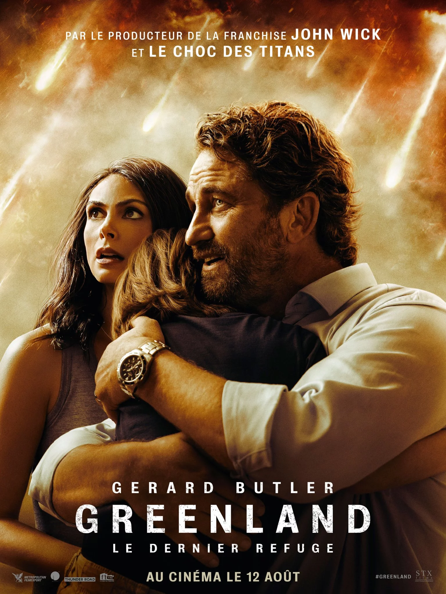

Il existe 12 signes astrologiques
Du 21/03 au 19/04 le mois est representé par le signe bélier
| Dates | Signes |
|---|---|
| 22/12 - 19/01 | Capricorne |
| 20/01 - 19/02 | Verseau |
| 20/02 - 20/03 | Poissons |
| 21/03 - 19/04 | Belier |
| 20/04 - 20/05 | Taureau |
| 21/05 - 20/06 | Gemeaux |
| 21/06 - 22/07 | Cancer |
| 23/07 - 23/08 | Lion |
| 24/08 - 22/09 | Vierge |
| 23/09 - 22/10 | Balance |
| 23/10 - 21/11 | Scorpion |
| 22/11 - 21/12 | Sagittaire |
Kane, favori pour le poste de gouverneur, tiens son disours de campagne. Au début des années 1940, Charles
Foester Kane meurt dans son manoir de Xanadu, un vaste domaine palatial de Floride, en prononçant dans un
dernier souffle rosebud
Image de film contenant un lien 